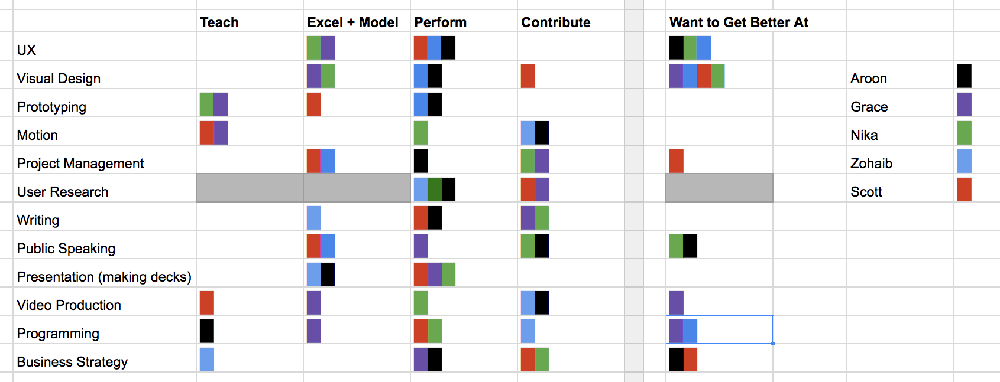

As this is our first blog post, we wanted to describe our first steps approaching the prompt and our initial thoughts on the project. We discussed our hopes and dreams for the Capstone process and our project with Mastercard around the future of authentication and digital payments.
To structure the team, we wanted to come up with roles that reflected our strong and weak points, what each of us are trying to learn, and what we can learn from others. We started this process by creating a list of skills and ranking our aptitude with each (from ‘I can teach this to others', to ‘I’m really good at this' to 'I can contribute to this’). Once ranking our strong suits, we then chalked up what we wanted to individually get better at.
Skills Rubric leading to Roles
Our method for doing this took form in a Google Spreadsheet. Everyone got a color and copy-and-pasted in the █ unicode character to mark the box. We did it all at once and in the same room. This produced a chart that helped us instantly visualize the range of our team. Most critically, it uncovered the absence of research skills as well as the interest to develop them. This was an immediate issue that needed discussion and we worked through it by discussing team roles.
Mentor/Mentee Roles
To encouraging learning from each other as well as having accountability and ownership, we are going with a mentor/mentee model. Mentors are skilled experts who are comfortable teaching in the area. They own the responsibility and best practices of the area, but largely let a mentee guide the direction and own the work. This lets the person who is hoping to learn the most about a skill develop that skill, and ask the mentor for advice or help along the way. If the mentee is struggling, the mentor is there to back them up and take on parts that need more work.
The Topic
All of us are interested in cybersecurity, data privacy, as well as the payments technology in Mastercard’s ecosystem that allow consumers to make quick and safe payments. The prompt is wide open and will allow us to get into consumer sentiments and perceptions around authentication, privacy, and convenience while paying online. Next week we’ll continue to develop questions and co-design materials for the kick off and try to narrow in on the clients desires in a more structured way.